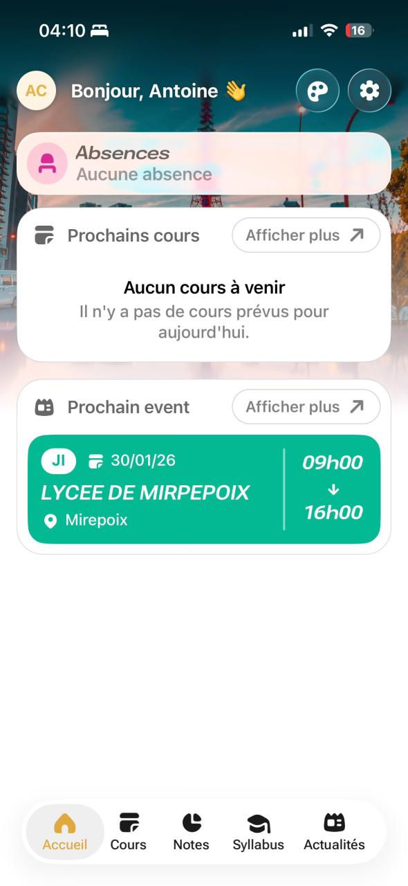
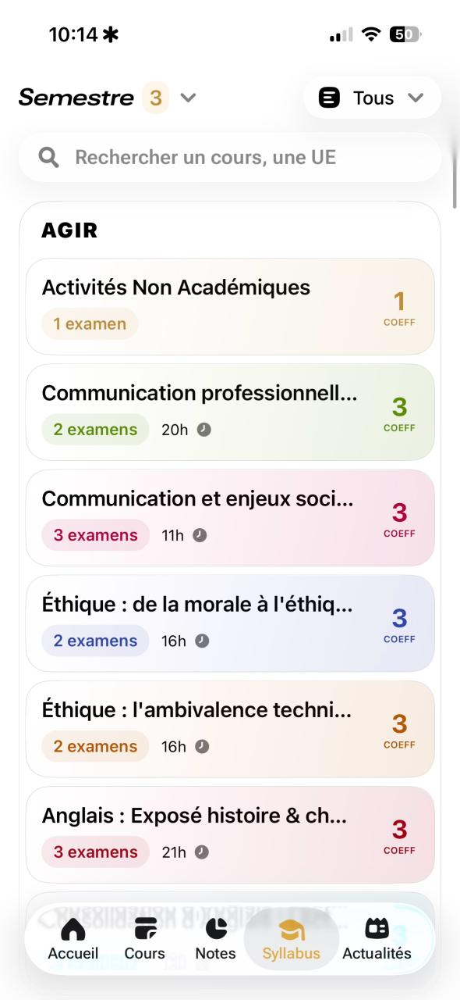

Chrysalide is the biggest IT student related project I have
been involved in lately. The goal of this project is to
create an app that merges every service from my engineering
school Epita into a clear flow/view.
To do so, 2 friends (shoutout to Gaël and Maxime) and I
spent many hours to craft the perfect app, and we are still
improving it everyday.

The main screen (home)
What's really cool about this is that we are now backed by
our school and they offer us support if we need to
communicate about the app!
Today, the app is used by more than 2000 students! It has
been published on the play store and app store :)

The syllabus view
There's also a community of 500 students that test the betas
of the app and report all kinds of bugs.